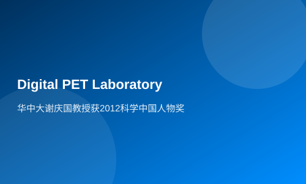

Professor Xie Qingguo of Huazhong University won the 2012 Science Chinese Character Award
Professor Qiangguo Xie has been engaged in research on PET instrument development and imaging applications for a long time. He invented a simple multi-voltage threshold sampling method (MVT) that achieves precise digitalization of high-speed pulse signals. His innovations span three levels: the digitization method of PET pulses, detector technology, and imaging systems, marking a leap from concept to system and from principle to application. This pioneering work has set a new precedent for fully digitalized PET. The Digital PET he independently developed exhibits unprecedented new characteristics that traditional PET does not have, which is expected to bring about changes in the development and application of PET, potentially leading to breakthroughs in prevention and early diagnosis of diseases such as cancer, thereby promoting leapfrog development in emerging strategic industries like China's cutting-edge medical equipment.
It is reported that the 'Science and Technology China Annual Figure' selection began in 2002 with the aim of encouraging scientific workers who have made outstanding contributions to national technological development. This event awarded over a hundred figures from ten fields including basic research, mechanical engineering and transportation, information technology and electronics, etc., as 'Science and Technology China 2012 Annual Figure Award', while also presenting six special awards such as the Lifetime Achievement Award.